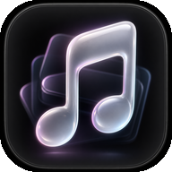
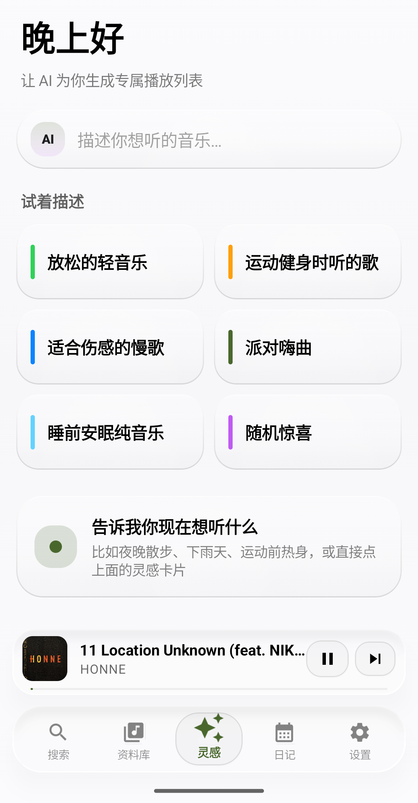
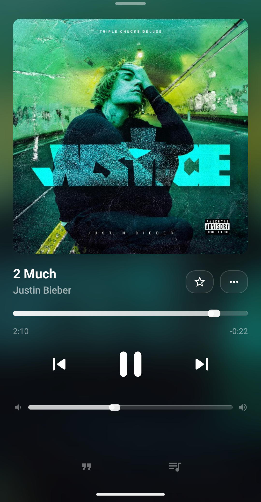
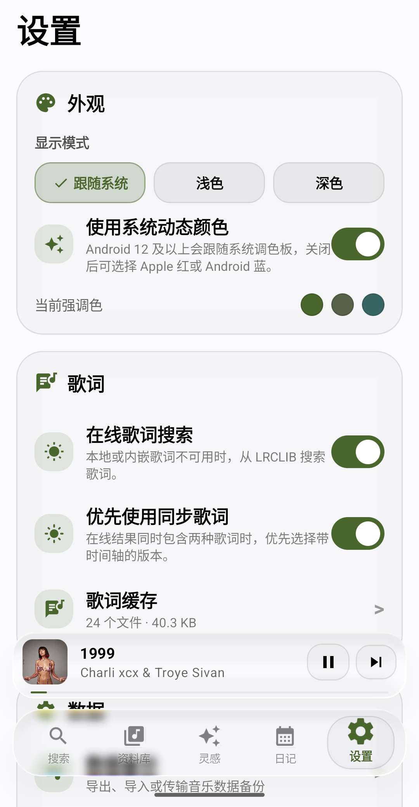
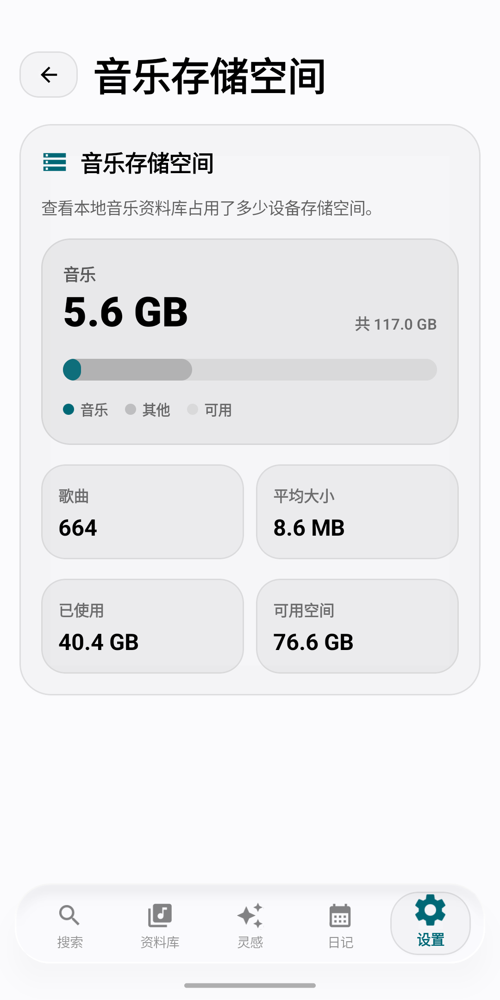
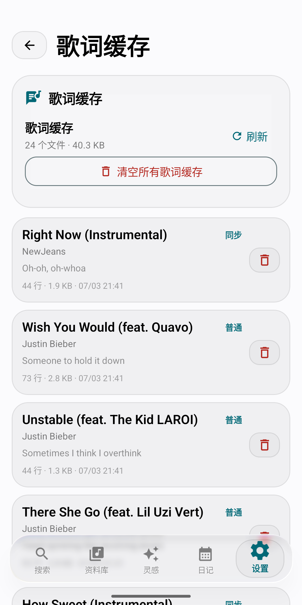
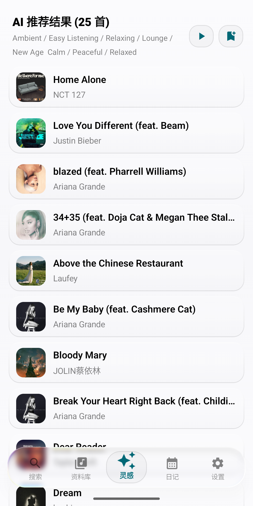
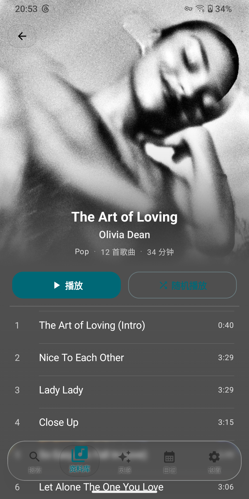
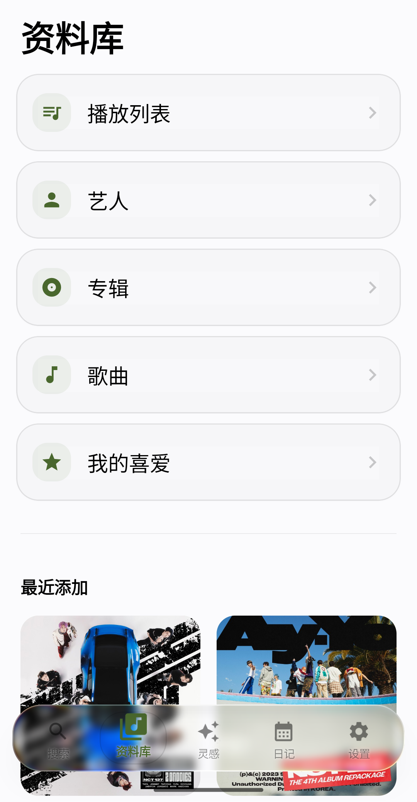
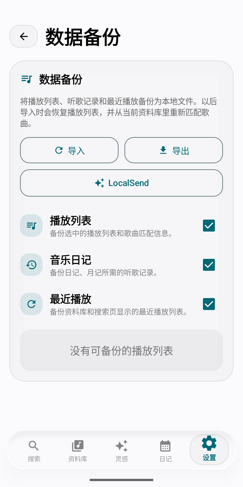

它从一个很简单的愿望开始
本地音乐播放器不应该只是“能播放”。它应该有一点温度：专辑封面要漂亮，歌词要跟得上，底栏要像真实玻璃一样轻，听过的歌也应该被记住。
所以灵感音乐把资料库、正在播放、歌词、日记、备份和 AI 推荐放到同一个体验里。它既是播放器，也是一个帮你重新遇见音乐的地方。

灵感音乐 Inspire MusicLocal-first Android music player
灵感音乐不是一张冷冰冰的歌曲列表。它会安静收好你的专辑、歌词、播放列表和听歌记忆，也会在你不知道听什么的时候，递给你一点新的灵感。

Why Inspire Music
本地音乐播放器不应该只是“能播放”。它应该有一点温度：专辑封面要漂亮，歌词要跟得上，底栏要像真实玻璃一样轻，听过的歌也应该被记住。
所以灵感音乐把资料库、正在播放、歌词、日记、备份和 AI 推荐放到同一个体验里。它既是播放器，也是一个帮你重新遇见音乐的地方。
“下雨天散步”“睡前安静一点”“运动前热身”，把心情交给它。
本地、内嵌、在线歌词和缓存管理，都尽量不打扰你的播放。
Built for listening
底栏、mini 播放器、卡片和按钮统一成高通透玻璃视觉，浅色和深色模式都有自己的质感。
歌曲、专辑、艺人、播放列表、我的喜爱集中管理，适合认真整理音乐的人。
专辑封面、进度、音量和播放控制连成一个沉浸式页面，听歌时少一点打断。
日记、周记、月记记录最近听过的歌、艺人和流派，把听歌变成一种可以回看的记忆。
播放列表、听歌记录和最近播放可以导出导入，换设备或重装时不必从零开始。
像系统储存空间一样看清本地音乐占用，知道自己的音乐收藏到底有多大。
Light and dark








Ready to listen
公开 APK 会放在 GitHub Releases。核心播放、本地资料库、歌词缓存、音乐日记和数据备份都优先在设备本机完成。